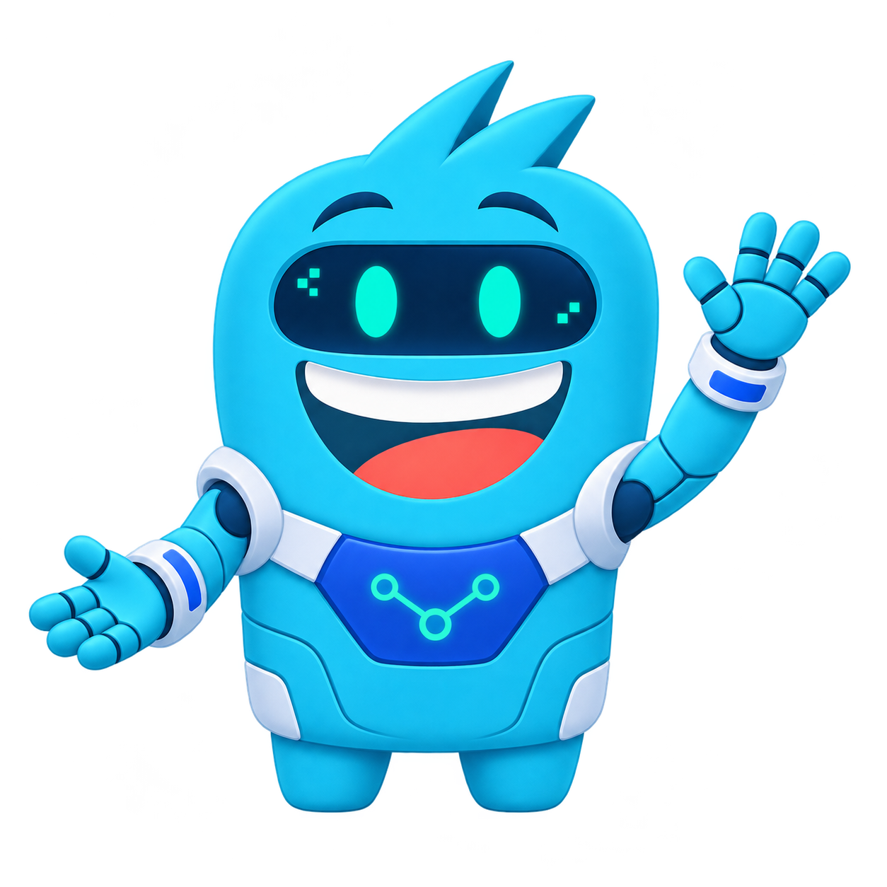

Make everyday care
easier to follow.
Bring records, appointments, documents, and clinic work into a clear, role-based experience.
myhealth began with a practical question: how can patients and clinic teams find what they need in one place?
 Built with care in Bahrain.
Built with care in Bahrain.Patients may keep reports, visit details, and appointment information in different places. Staff also need a clear way to review records, manage visits, and follow daily work.
myhealth brings these activities into separate but connected workspaces for patients, care teams, and administrators. The proposal also asks how an AI chatbot could explain uploaded PDF reports in simple words.
The report explores record summaries, reliable booking, missed-appointment research, and staff follow-up. The aim is easier organization; better clinical outcomes have not yet been measured.
Bring records, appointments, documents, and clinic work into a clear, role-based experience.
Work toward care that is easier to understand and coordinate, with clear permissions and healthcare professionals in charge.
A senior project from the University of Bahrain, College of Information Technology.
Project team member
Project team member
Project team member
A clearer place to find personal records, visits, documents, and permitted family information.
Connected schedules, patient context, and follow-up work with an owner and history.
A prototype to test usability, shared workflows, and carefully reviewed AI support.
Explore the patient, care team, and clinic experiences.
Take a look inside